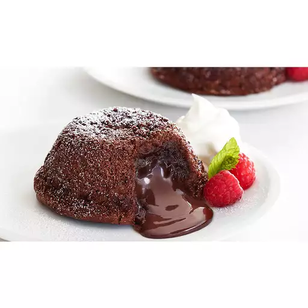

Eggless Chocolate Lava Cake for 2

This eggless chocolate lava cake recipe is very delicious and easy to make.
It takes no longer than ten minutes to prepare if you are somewhat experienced
and tastes absolutely fantastic.
Ingredients
- 2 tbsp melted butter
- 1/3 cup sugar
- 1/2 cup milk
- 1/2 cup plain flower
- 4 tbsp cocoa powder
- 1/2 tsp baking powder
- Your preferred chocolate
Instructions
- Put the melted butter and sugar into a bowl and mix until the sugar is a yellow-y colour.
- Add the milk and mix again until it is a liquid.
- Add the flour, cocoa powder and baking powder and mix until thick and all one colour.
- Pour enough mixture to fill 2 small ramakins 1/3 of the way full and add your chocolate in the middle.
Now fill the ramakin with mixture.
- Bake in the oven at 180°C Fan/200°C Oven/Gas Mark 6 for 15-17 minutes
- Leave to sit for a few minutes and serve while warm.